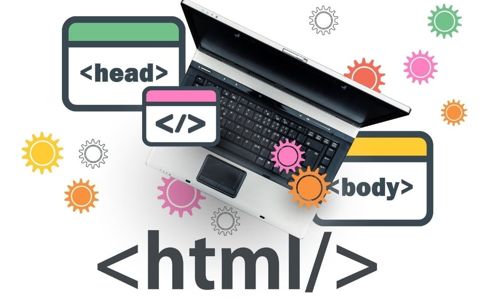
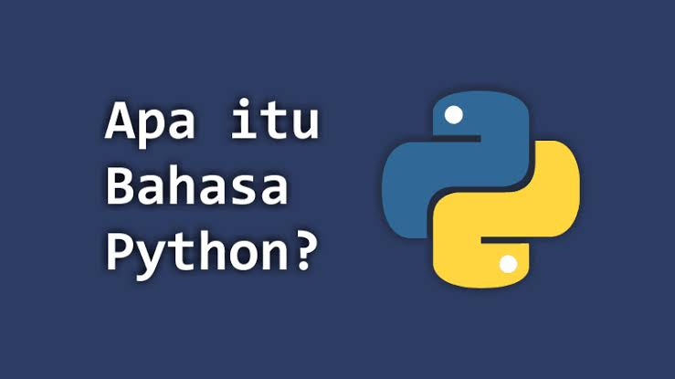
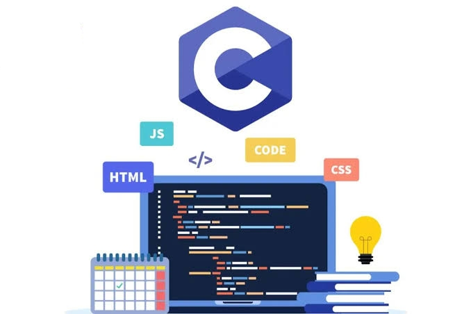

Selamat Datang di Platform Belajar Coding
Pelajari berbagai bahasa pemrograman dari dasar hingga tingkat lanjut, seperti HTML, CSS, JavaScript, Python, PHP, C, dan C++.
Gunakan menu di sidebar untuk mengeksplorasi lebih lanjut tentang setiap bahasa dan melihat contohnya.


Mulai Belajar Hari Ini!
Pilih salah satu bahasa pemrograman di bawah ini untuk memulai. Setiap bagian berisi pengenalan, contoh kode, dan latihan untuk membantu Anda belajar.
sejarah html
Sejarah HTML pertama kali dibuat oleh Tim Berners-Lee yang merupakan fisikawan di lembaga penelitian CERN, Swiss. Berners-Lee mempunyai ide atau pemikiran mengenai sistem hypertext berbasis internet. Sekitar tahun 1991, Tim merilis versi HTML pertama yang di dalamnya terdalam sekitar 18 tag. Untuk sekarang, HTML mengalami beberapa pengembangan dari sisi fitur serta informasi yang disajikan hingga versi terbaru, yaitu HTML5. Setiap tahunnya, bahasa ini mempunyai tingkat popularitas yang cukup tinggi sehingga dijadikan sebagai web standard resmi di dunia pemrograman.

html
HTML (HyperText Markup Language) adalah bahasa markup standar yang digunakan untuk membuat dan menyusun struktur halaman web. HTML berfungsi untuk menampilkan teks, gambar, video, dan berbagai elemen lain di dalam sebuah situs web. HTML bukanlah bahasa pemrograman, melainkan bahasa markup yang menggunakan tag-tag tertentu untuk memberikan format dan struktur pada konten.
HTML bekerja dengan cara menggunakan tag-tag untuk memberi tahu browser bagaimana menampilkan berbagai elemen. Setiap tag memiliki tujuan tertentu, misalnya untuk membuat heading, paragraph, atau gambar. Tag HTML umumnya terdiri dari dua bagian: tag pembuka (misalnya <html>) dan tag penutup (misalnya </html>). Beberapa tag juga dapat memiliki atribut untuk memberikan informasi tambahan.
Komponen Utama HTML:
1.tag
Tag adalah elemen dasar HTML yang digunakan untuk menandai awal dan akhir sebuah elemen. Contohnya:
<h1> Tag untuk heading (judul utama). <P> Tag untuk paragraf. <Img> tag untuk menampilkan gambar
Beberapa Contoh Tag HTML
1. Tag <html>
Penjelasan
Tag ini menandai awal dan akhir dari sebuah dokumen HTML. Semua elemen HTML harus berada di dalam tag <html>.
Contoh:
<html>
<!-- Isi konten HTML -->
</html>
2. Tag <head>
Penjelasan
Bagian ini digunakan untuk menyimpan metadata tentang dokumen, seperti judul halaman dan link ke file CSS.
Contoh:
<head>
<title>Judul Halaman</title>
</head>
3. Tag <title>
Penjelasan
Tag ini menentukan judul halaman yang akan muncul di tab browser.
Contoh:
<title>My Web Page</title>
4. Tag <body>
Penjelasan
Bagian ini berisi konten utama yang akan ditampilkan di halaman web, seperti teks, gambar, dan elemen lainnya.
Contoh:
<body>
<h1>Selamat Datang!</h1>
<p>Ini adalah contoh halaman.</p>
</body>
5. Tag <h1> sampai <h6>
Penjelasan
Digunakan untuk membuat heading (judul). <h1> adalah judul terbesar, sedangkan <h6> adalah yang terkecil.
Contoh:
<h1>Judul Utama</h1>
<h2>Sub Judul</h2>
<h3>Sub Sub Judul</h3>
6. Tag <p>
Penjelasan
Digunakan untuk membuat paragraf.
Contoh:
<p>Ini adalah sebuah paragraf.</p>
7. Tag <a>
Penjelasan
Digunakan untuk membuat tautan (link) ke halaman lain. Atribut href menentukan URL tujuan.
Contoh:
<a href="https://example.com">Klik di sini untuk mengunjungi website</a>
8. Tag <img>
Penjelasan
Digunakan untuk menampilkan gambar. Atribut src berisi URL atau lokasi gambar, dan atribut alt memberikan deskripsi alternatif jika gambar tidak dapat ditampilkan.
Contoh:
<img src="gambar.jpg" alt="Deskripsi gambar">
9. Tag <ul> dan <ol>
Penjelasan
Tag <ul> digunakan untuk membuat daftar tidak terurut (bullet list), sedangkan <ol> digunakan untuk daftar terurut (numbered list). Elemen daftar dalam kedua tag ini adalah <li>.
Contoh:
<ul>
<li>Item 1</li>
<li>Item 2</li>
</ul>
<ol>
<li>Langkah 1</li>
<li>Langkah 2</li>
</ol>
10. Tag <div>
Penjelasan
Digunakan untuk mengelompokkan elemen-elemen lainnya. Tag ini sering digunakan dalam desain layout.
Contoh:
<div>
<p>Ini adalah bagian dari sebuah div.</p>
</div>
11. Tag <span>
Penjelasan
Digunakan untuk menandai bagian kecil dari teks atau elemen lain dalam satu baris. Berbeda dengan <div>, tag <span> tidak membuat pemisahan blok.
Contoh:
<span style="color: red;">Teks berwarna merah</span>
12. Tag <form>
Penjelasan
Digunakan untuk membuat formulir interaktif, seperti isian teks, tombol kirim, dan lain-lain.
Contoh:
<form action="/submit" method="post">
<input type="text" name="username">
<input type="submit" value="Kirim">
</form>
13. Tag <table>
Penjelasan
Digunakan untuk membuat tabel. Tag terkait seperti <tr> (row), <td> (data), dan <th> (header) digunakan untuk menyusun isi tabel.
Contoh:
<table>
<tr>
<th>Nama</th>
<th>Usia</th>
</tr>
<tr>
<td>John</td>
<td>25</td>
</tr>
</table>
14. Tag <br>
Penjelasan
Digunakan untuk membuat baris baru (line break) dalam teks.
Contoh:
<p>Baris pertama<br>Baris kedua</p>
2.elemen
Elemen HTML terdiri dari tag pembuka, konten, dan tag penutup. Contohnya:
<p>Ini adalah paragraf.</p>3.atribut
Atribut memberikan informasi tambahan pada elemen HTML, biasanya digunakan dalam tag pembuka. Contohnya:
<img src="gambar.jpg" alt="Deskripsi gambar">struktur kode html
contoh 1
<!DOCTYPE html>
<html>
<head>
<title>Halaman HTML Pertama</title>
</head>
<body>
<h1>Halo, Dunia!</h1>
</body>
</html>contoh 2
<!DOCTYPE html>
<html>
<head>
<title>Judul Halaman</title>
</head>
<body>
<h1>Selamat Datang di HTML</h1>
<p>Ini adalah contoh paragraf.</p>
<a href="https://example.com">Kunjungi Website</a>
</body>
</html>25 contoh html
1.contoh html dasar
<!DOCTYPE html> <html lang="id"> <head> <meta charset="UTF-8"> <meta name="viewport" content="width=device-width, initial-scale=1.0"> <title>Halaman Pertama</title> </head> <body> <h1>Selamat Datang di Halaman Web Saya</h1> <p>Ini adalah paragraf pertama saya di HTML!</p> </body> </html>2.membuat tautan
<a href="https://www.google.com">Kunjungi Google</a>3.menambahkan gambar
<img src="gambar.jpg" alt="Deskripsi Gambar">4.membuat daftar
<ul> <li>Apel</li> <li>Pisang</li> <li>Jeruk</li> </ul>5.membuat formulir
<form action="submit.php" method="post"> <label for="nama">Nama:</label> <input type="text" id="nama" name="nama"> <input type="submit" value="Kirim"> </form>
6.membuat tabel
<table border="1"> <tr> <th>Nama</th> <th>Umur</th> </tr> <tr> <td>Andi</td> <td>25</td> </tr> <tr> <td>Budi</td> <td>30</td> </tr> </table>7.membuat heading
<h1>Judul Utama</h1> <h2>Subjudul</h2> <h3>Sub-subjudul</h3>8.menambahkan video
<video width="320" height="240" controls> <source src="video.mp4" type="video/mp4"> Browser Anda tidak mendukung tag video. </video>9.membuat formulir dengan input yang berbeda
<form action="/submit" method="post"> <label for="email">Email:</label> <input type="email" id="email" name="email"><br><br> <label for="password">Password:</label> <input type="password" id="password" name="password"><br><br> <label for="gender">Jenis Kelamin:</label><br> <input type="radio" id="pria" name="gender" value="pria"> Pria<br> <input type="radio" id="wanita" name="gender" value="wanita"> Wanita<br><br> <label for="comment">Komentar:</label><br> <textarea id="comment" name="comment" rows="4" cols="50"></textarea><br><br> <input type="submit" value="Kirim"> </form>10.membuat navigasi dengan link
<nav> <ul> <li><a href="#home">Home</a></li> <li><a href="#about">About</a></li> <li><a href="#services">Services</a></li> <li><a href="#contact">Contact</a></li> </ul> </nav>11.membuat konten dengam div dan span
<div class="container"> <h2>Artikel Terbaru</h2> <p><span class="highlight">HTML</span> adalah bahasa yang digunakan untuk membuat halaman web.</p> </div>12.membuat meta tag untuk seo
<head> <meta charset="UTF-8"> <meta name="description" content="Ini adalah deskripsi halaman web saya."> <meta name="keywords" content="HTML, CSS, JavaScript"> <meta name="author" content="Nama Penulis"> </head>13.menambahkan ikon favicon
<head> <link rel="icon" href="favicon.ico" type="image/x-icon"> </head>14.menambahkan iframe untuk menyematkan konten
<iframe src="https://www.youtube.com" width="600" height="400"></iframe>15.menambahkan audio
<audio controls> <source src="audio.mp3" type="audio/mp3"> Browser Anda tidak mendukung tag audio. </audio>16.membuat link untuk mengunduh file
<a href="file.pdf" download>Unduh File PDF</a>17.membuat list yang terurut
<ol> <li>Belajar HTML</li> <li>Belajar CSS</li> <li>Belajar JavaScript</li> </ol>18.membuat peta dengan goole maps (embed)
<iframe src="https://www.google.com/maps/embed?pb=..."></iframe>
lanjut ke css19.membuat komten dengan <article> dan <selection>
<article> <h2>Artikel tentang HTML</h2> <p>HTML adalah bahasa markah untuk membuat halaman web...</p> </article> <section> <h3>Bagian 1: Pengenalan HTML</h3> <p>HTML adalah singkatan dari HyperText Markup Language...</p> </section>20.membuat link yang membuka halaman baru
<a href="https://www.example.com" target="_blank">Kunjungi Example</a>21.menggunakan tag <strong> dan <em> untuk penekanan
<p><strong>HTML</strong> adalah bahasa markah yang digunakan untuk membuat halaman web.</p> <p><em>HTML</em> adalah singkatan dari Hypertext Markup Language.</p>22.menambahkan meta tag untuk pengaturan karakter
<head> <meta charset="UTF-8"> </head>23.membuat kotak pencarian
<form action="/search" method="get"> <input type="search" name="query" placeholder="Cari sesuatu..."> <button type="submit">Cari</button> </form>24.menambahkan tag <footer> untuk footer halamam
<footer> <p>© 2025 Website Saya. Semua hak dilindungi.</p> </footer>25.membuat tooltip dengan atribut tittle
<p>Gerakkan kursor ke <span title="Informasi lebih lanjut">teks ini</span> untuk melihat tooltip.</p>
CSS
CSS (Cascading Style Sheets) adalah bahasa yang digunakan untuk mendesain dan mengatur tampilan halaman web. CSS mengontrol elemen-elemen HTML seperti warna, ukuran font, tata letak, jarak antar elemen, dan banyak lagi. Dengan CSS, kita dapat membuat halaman web lebih menarik dan lebih terstruktur, tanpa mempengaruhi konten HTML itu sendiri. atau bahasa stylesheet yang digunakan untuk mengatur tampilan dan tata letak elemen-elemen pada halaman web yang dibuat menggunakan HTML. CSS memungkinkan pengembang untuk memisahkan konten (HTML) dari presentasi (desain), sehingga desain halaman web lebih fleksibel, terstruktur, dan mudah dikelola.
penjelasan css
CSS digunakan untuk mengontrol aspek-aspek visual sebuah halaman web, seperti:
1.warna teks
2.ukuran font
3.margin dan padding
4.tata letak elemen
5.gambar latar belakang
6.efek animasi dan transisi
body {
font-family: Arial, sans-serif;
background-color: #f0f0f0;
}
h1 {
color: blue;
}Ada tiga cara penerapan CSS:
1. Inline CSS:
Langsung di dalam elemen HTML menggunakan atribut style.2. Internal CSS:
Ditulis di dalam tag <style> di bagian <head> HTML.
3. External CSS:
Ditulis di file terpisah dengan ekstensi .css dan dihubungkan menggunakan tag <link>.
contoh css dan 20 contoh css
1. Inline CSS
Mengatur warna teks langsung di elemen HTML.
<p style="color: red;">Teks ini berwarna merah.</p>
2.internal css
CSS ditulis dalam tag <style> di file HTML.
<!DOCTYPE html>
<html lang="id">
<head>
<meta charset="UTF-8">
<meta name="viewport" content="width=device-width, initial-scale=1.0">
<title>Internal CSS</title>
<style>
body {
background-color: lightblue;
}
h1 {
color: navy;
text-align: center;
}
</style>
</head>
<body>
<h1>Selamat Datang</h1>
<p>Ini adalah contoh internal CSS.</p>
</body>
</html>
3.external css
file html
<!DOCTYPE html>
<html lang="id">
<head>
<meta charset="UTF-8">
<meta name="viewport" content="width=device-width, initial-scale=1.0">
<title>External CSS</title>
<link rel="stylesheet" href="style.css">
</head>
<body>
<h1>Halo Dunia!</h1>
<p>Ini adalah contoh penggunaan CSS eksternal.</p>
</body>
</html>
file css
body {
background-color: #f0f0f0;
font-family: Arial, sans-serif;
}
h1 {
color: green;
text-align: center;
}
p {
color: gray;
font-size: 18px;
}
4. Menggunakan CSS untuk Hover
Efek ketika elemen disentuh atau diarahkan kursor.
<!DOCTYPE html>
<html lang="id">
<head>
<style>
a {
text-decoration: none;
color: blue;
}
a:hover {
color: red;
}
</style>
</head>
<body>
<a href="#">Tautan dengan efek hover</a>
</body>
</html>
5.animasi menggunakan css
animasi sederhana
<!DOCTYPE html>
<html lang="id">
<head>
<style>
@keyframes contohAnimasi {
from {
background-color: red;
}
to {
background-color: yellow;
}
}
div {
width: 100px;
height: 100px;
animation: contohAnimasi 3s infinite;
}
</style>
</head>
<body>
<div></div>
</body>
</html>
20.contoh css
1. Mengatur Warna Latar Belakang
body {
background-color: lightblue;
}
2. Mengatur Warna Teks
h1 {
color: navy;
}
3. Mengatur Ukuran Font
p {
font-size: 18px;
}
4. Menggunakan Font Family
body {
font-family: Arial, sans-serif;
}
5. Mengatur Margin
h1 {
margin: 20px;
}
6. Mengatur Padding
div {
padding: 15px;
}
7. Membuat Border
div {
border: 2px solid black;
}
8. Mengatur Border Radius
button {
border-radius: 10px;
}
9. Menggunakan Efek Hover
a:hover {
color: red;
text-decoration: underline;
}
10. Mengatur Tinggi dan Lebar Elemen
div {
width: 300px;
height: 200px;
}
11. Mengatur Tampilan Flexbox
.container {
display: flex;
justify-content: center;
align-items: center;
}
12. Menggunakan Grid Layout
.grid-container {
display: grid;
grid-template-columns: 1fr 1fr 1fr;
gap: 10px;
}
13. Membuat Gambar Responsif
img {
max-width: 100%;
height: auto;
}
14. Membuat Transisi
button {
transition: background-color 0.5s ease;
}
button:hover {
background-color: yellow;
}
15. Menambahkan Animasi
@keyframes fadeIn {
from {
opacity: 0;
}
to {
opacity: 1;
}
}
div {
animation: fadeIn 2s ease-in-out;
}
16. Membuat Teks Shadow
h1 {
text-shadow: 2px 2px 5px gray;
}
17. Menambahkan Box Shadow
div {
box-shadow: 5px 5px 15px rgba(0, 0, 0, 0.3);
}
18. Menggunakan Z-index
div {
position: absolute;
z-index: 10;
}
19. Mengatur Elemen Fixed
.header {
position: fixed;
top: 0;
width: 100%;
background-color: white;
}
20. Menggunakan Opacity
img {
opacity: 0.5;
}
img:hover {
opacity: 1;
}
Lanjut ke JavaScript

JavaScript
JavaScriptJavaScript (JS) adalah bahasa pemrograman tingkat tinggi yang digunakan untuk membuat halaman web menjadi interaktif dan dinamis. JS sering digunakan bersama dengan HTML dan CSS untuk memberikan fungsi tambahan pada elemen web, seperti validasi formulir, animasi, pop-up, dan banyak lagi.
penjelasan java script
1.sisi klien
JavaScript berjalan di browser pengguna, memungkinkan interaksi langsung tanpa harus kembali ke server. Contoh: Saat tombol diklik, warna latar belakang berubah.
2. Fleksibilitas:
JavaScript digunakan untuk berbagai aplikasi, mulai dari manipulasi DOM, pengiriman data melalui AJAX, hingga pengembangan game berbasis web.
3. Libraries dan Frameworks:
Terdapat pustaka (library) dan kerangka kerja (framework) yang memperluas kemampuan JavaScript, seperti React.js, Vue.js, dan jQuer.
4. Sintaks:
JavaScript memiliki sintaks yang mudah dipahami, menyerupai bahasa pemrograman lainnya seperti Java atau C++.
function greet() {
alert("Halo, Dunia!");
}contoh JavaScript
1.menampilkan pesan
<!DOCTYPE html>
<html lang="id">
<head>
<title>Contoh JavaScript</title>
</head>
<body>
<script>
alert("Selamat datang di situs kami!");
</script>
</body>
</html>
2. Mengubah Konten Halaman
<!DOCTYPE html>
<html lang="id">
<head>
<title>Mengubah Konten</title>
</head>
<body>
<p id="demo">Ini teks asli.</p>
<button onclick="ubahTeks()">Klik Saya</button>
<script>
function ubahTeks() {
document.getElementById("demo").innerHTML = "Teks telah diubah!";
}
</script>
</body>
</html>
3. Mengubah Warna Latar dengan Klik
<!DOCTYPE html>
<html lang="id">
<head>
<title>Ubah Warna</title>
</head>
<body>
<button onclick="ubahWarna()">Ubah Warna Latar</button>
<script>
function ubahWarna() {
document.body.style.backgroundColor = "lightblue";
}
</script>
</body>
</html>
4. Validasi Formulir
<!DOCTYPE html>
<html lang="id">
<head>
<title>Validasi Formulir</title>
</head>
<body>
<form onsubmit="return validasi()">
<label for="nama">Nama:</label>
<input type="text" id="nama" name="nama">
<button type="submit">Kirim</button>
</form>
<script>
function validasi() {
let nama = document.getElementById("nama").value;
if (nama === "") {
alert("Nama tidak boleh kosong!");
return false;
}
return true;
}
</script>
</body>
</html>
15.contoh javascript
1. Alert Box
Menampilkan pesan pop-up saat halaman dimuat. <script> alert("Selamat datang di situs kami!"); </script>2. Menampilkan Teks di HTML
Mengubah konten elemen dengan ID tertentu. <p id="demo">Teks asli</p> <script> document.getElementById("demo").innerHTML = "Teks telah diubah!"; </script>3. Mengubah Warna Latar
Mengubah warna latar belakang halaman. <button onclick="ubahWarna()">Ubah Warna</button> <script> function ubahWarna() { document.body.style.backgroundColor = "lightblue"; } </script>4. Log ke Konsol
Menampilkan pesan di konsol browser. <script> console.log("Ini adalah log konsol"); </script>Lanjut ke Python5. Perulangan For
Menampilkan angka dari 1 hingga 5 di konsol. <script> for (let i = 1; i <= 5; i++) { console.log(i); } </script>6. Validasi Formulir
Memeriksa apakah form telah diisi. <form onsubmit="return validasi()"> <label for="nama">Nama:</label> <input type="text" id="nama" name="nama"> <button type="submit">Kirim</button> </form> <script> function validasi() { let nama = document.getElementById("nama").value; if (nama === "") { alert("Nama tidak boleh kosong!"); return false; } return true; } </script>7. Menghitung Total
Menghitung total dua angka yang dimasukkan oleh pengguna. <script> let a = 5; let b = 10; let total = a + b; console.log("Total: " + total); </script>8. Membuka Halaman Baru
Membuka halaman baru saat tombol diklik. <button onclick="window.open('https://www.google.com')">Buka Google</button>9. Mengambil Nilai Input
Mengambil dan menampilkan nilai input dari form. <input type="text" id="namaInput"> <button onclick="ambilInput()">Ambil Nilai</button> <script> function ambilInput() { let input = document.getElementById("namaInput").value; alert(input); } </script>10. Fungsi Penghitungan
Fungsi untuk menjumlahkan dua angka. <script> function hitung(a, b) { return a + b; } console.log(hitung(3, 4)); // 7 </script>11. Tombol Mengganti Warna
Mengganti warna teks saat tombol diklik. <button onclick="ubahTeks()">Ganti Warna Teks</button> <p id="teks">Teks yang akan berubah warnanya</p> <script> function ubahTeks() { document.getElementById("teks").style.color = "green"; } </script>12. Menambah Angka dengan Setiap Klik Setiap kali tombol diklik, angka akan bertambah.
<button onclick="tambah()">Klik Saya</button> <p id="angka">0</p> <script> let count = 0; function tambah() { count++; document.getElementById("angka").innerHTML = count; } </script>13. Menggunakan Event Listener Menangani klik tombol dengan event listener.
<button id="myButton">Klik Saya</button> <script> document.getElementById("myButton").addEventListener("click", function() { alert("Tombol telah diklik!"); }); </script>14. Menyembunyikan dan Menampilkan Elemen Menyembunyikan elemen dengan ID tertentu dan menampilkannya kembali.
<button onclick="toggle()">Sembunyikan/Tampilkan</button> <p id="paragraf">Ini adalah paragraf yang bisa disembunyikan.</p> <script> function toggle() { let para = document.getElementById("paragraf"); if (para.style.display === "none") { para.style.display = "block"; } else { para.style.display = "none"; } } </script>15. Membuat Countdown
Menampilkan hitung mundur menggunakan JavaScript. <p id="countdown"></p> <script> let time = 10; let countdown = setInterval(function() { document.getElementById("countdown").innerHTML = time; time--; if (time < 0) { clearInterval(countdown); document.getElementById("countdown").innerHTML = "Waktu habis!"; } }, 1000); </script>
Python
Python adalah bahasa pemrograman tingkat tinggi yang mudah dipahami dan digunakan. Python dikembangkan oleh Guido van Rossum dan dirilis pertama kali pada tahun 1991. Python mendukung berbagai paradigma pemrograman, seperti pemrograman berorientasi objek, pemrograman prosedural, dan pemrograman fungsional.
penjelasan python
Python dirancang agar mudah dibaca dan ditulis, dengan sintaks yang sederhana dan menyerupai bahasa Inggris. Python sering digunakan untuk pengembangan aplikasi web, analisis data, kecerdasan buatan (AI), pembelajaran mesin (machine learning), otomatisasi, hingga pengembangan game.
Keunggulan Python:
1. Mudah dipelajari: Sintaks yang sederhana dan ringkas.
2. Multi-platform:Dapat dijalankan di berbagai sistem operasi (Windows, macOS, Linux).
3. Beragam pustaka:Python memiliki pustaka standar yang besar serta pustaka eksternal untuk berbagai kebutuhan.
4. Komunitas yang besar: Python memiliki banyak pengguna yang aktif sehingga mudah menemukan bantuan.
contoh python
1. Mencetak TeksLanjut ke PHPprint("Halo, Dunia!") 2. Penggunaan Variabel nama = "Andi" umur = 25 print(f"Nama: {nama}, Umur: {umur}") 3. Percabangan (If-Else) angka = 10 if angka > 5: print("Angka lebih besar dari 5") else: print("Angka lebih kecil atau sama dengan 5") 4. Perulangan for i in range(1, 6): print(f"Perulangan ke-{i}") 5. Fungsi def tambah(a, b): return a + b hasil = tambah(5, 3) print(f"Hasil penjumlahan: {hasil}") 6. Operasi pada List buah = ["apel", "mangga", "jeruk"] buah.append("pisang") for b in buah: print(b) 7. Penggunaan Dictionary data = {"nama": "Budi", "umur": 20} print(data["nama"]) # Output: Budi 8. Membaca Input nama = input("Masukkan nama Anda: ") print(f"Halo, {nama}") 9. Menggunakan Library import math angka = 16 print(f"Akar kuadrat dari {angka} adalah {math.sqrt(angka)}") 10. Program Sederhana: Kalkulator def kalkulator(a, b, operasi): if operasi == "+": return a + b elif operasi == "-": return a - b elif operasi == "*": return a * b elif operasi == "/": return a / b else: return "Operasi tidak valid" a = float(input("Masukkan angka pertama: ")) b = float(input("Masukkan angka kedua: ")) operasi = input("Masukkan operasi (+, -, *, /): ") hasil = kalkulator(a, b, operasi) print(f"Hasil: {hasil}")def greet(): print("Halo, Dunia!") greet()
PHP
PHPPHP (singkatan dari PHP: Hypertext Preprocessor) adalah bahasa pemrograman server-side yang dirancang khusus untuk pengembangan web. PHP digunakan untuk membuat halaman web yang dinamis dan interaktif, seperti formulir pendaftaran, sistem login, hingga toko online.
<?php
echo "Halo, Dunia!";
?>penjelasan php
PHP bekerja di sisi server (server-side scripting), yang berarti kode PHP diproses di server, dan hasilnya dikirim ke browser pengguna dalam bentuk HTML. PHP dapat terintegrasi dengan basis data seperti MySQL untuk menyimpan dan mengambil data.
Keunggulan PHP:
1. Open Source: Gratis dan banyak digunakan di seluruh dunia.
2. Kemudahan Integrasi: Dapat digunakan bersama HTML, CSS, dan JavaScript.
4. Kaya Fitur: Mendukung pengolahan file, pengiriman email, dan banyak lagi.
contoh PHP
Lanjut ke C1. Menampilkan Teks
Kode PHP biasanya disisipkan dalam file dengan ekstensi .php dan menggunakan tag <?php untuk memulai. <?php echo "Halo, Dunia!"; // Output: Halo, Dunia! ?>2. Menggunakan Variabel
PHP mendukung variabel untuk menyimpan data seperti teks atau angka. <?php $nama = "Andi"; $umur = 25; echo "Nama: $nama, Umur: $umur"; ?>3. Percabangan (If-Else)
PHP mendukung kontrol alur seperti if-else. <?php $nilai = 85; if ($nilai >= 90) { echo "Grade: A"; } elseif ($nilai >= 75) { echo "Grade: B"; } else { echo "Grade: C"; } ?>4. Perulangan
PHP menyediakan berbagai jenis perulangan seperti for dan while. <?php for ($i = 1; $i <= 5; $i++) { echo "Perulangan ke-$i<br>"; } ?>5. Menggunakan Fungsi
Fungsi memungkinkan Anda untuk mengelompokkan logika. <?php function penjumlahan($a, $b) { return $a + $b; } echo penjumlahan(5, 3); // Output: 8 ?>
C
C Bahasa C adalah bahasa pemrograman tingkat menengah yang dikembangkan oleh Dennis Ritchie pada tahun 1972 di Bell Labs. Bahasa ini dirancang untuk menulis sistem operasi dan sekarang menjadi salah satu bahasa pemrograman yang paling populer. Bahasa C dikenal karena fleksibilitasnya, efisiensinya, dan kemampuannya untuk digunakan dalam pengembangan sistem perangkat keras maupun perangkat lunak.
#include <stdio.h>
int main() {
printf("Halo, Dunia!");
return 0;
}penjelasan
Penjelasan Bahasa C
Struktur: Program dalam bahasa C terdiri dari fungsi, dengan fungsi utama bernama main() yang menjadi titik awal eksekusi.
Sintaks: Bahasa C memiliki sintaks yang ringkas, menggunakan karakter seperti {} untuk blok kode, ; untuk mengakhiri pernyataan, dan variabel yang harus dideklarasikan sebelum digunakan.
Kompatibilitas: Bahasa C adalah dasar dari banyak bahasa modern seperti C++, Java, dan Python.
Efisiensi: C memungkinkan akses langsung ke memori dan penggunaan pointer, sehingga sangat efisien untuk pemrograman sistem.
contoh program c
1. Program "Hello, World!"
Menampilkan teks sederhana di layar.
<pre>
#include <stdio.h>
int main() {
printf("Hello, World!\n");
return 0;
}
</pre>
2. Menggunakan Variabel dan Operator
Melakukan operasi penjumlahan dua angka.
<pre>
#include <stdio.h>
int main() {
int a = 5;
int b = 3;
int hasil = a + b;
printf("Hasil penjumlahan: %d\n", hasil);
return 0;
}
</pre>
3. Percabangan (If-Else)
Memeriksa apakah sebuah angka positif, negatif, atau nol.
<pre>
#include <stdio.h>
int main() {
int angka;
printf("Masukkan sebuah angka: ");
scanf("%d", &angka);
if (angka > 0) {
printf("Angka adalah positif.\n");
} else if (angka < 0) {
printf("Angka adalah negatif.\n");
} else {
printf("Angka adalah nol.\n");
}
return 0;
}
</pre>
4. Perulangan (For Loop)
Menampilkan angka dari 1 hingga 5.
<pre>
#include <stdio.h>
int main() {
for (int i = 1; i <= 5; i++) {
printf("Angka ke-%d\n", i);
}
return 0;
}
</pre>
5. Fungsi
Membuat fungsi untuk menghitung faktorial dari sebuah angka.
<pre>
#include <stdio.h>
int faktorial(int n) {
if (n == 0 || n == 1) {
return 1;
} else {
return n * faktorial(n - 1);
}
}
int main() {
int angka;
printf("Masukkan sebuah angka: ");
scanf("%d", &angka);
printf("Faktorial dari %d adalah %d\n", angka, faktorial(angka));
return 0;
}
</pre>
Lanjut ke C++
C++

C++ Bahasa C++ adalah bahasa pemrograman tingkat menengah yang dikembangkan oleh Bjarne Stroustrup pada tahun 1980. Bahasa ini adalah pengembangan dari bahasa C dengan tambahan konsep Pemrograman Berorientasi Objek (Object-Oriented Programming). C++ sering digunakan untuk mengembangkan aplikasi perangkat lunak yang kompleks, seperti sistem operasi, game, hingga aplikasi desktop.adalah pengembangan dari bahasa C yang mendukung fitur pemrograman berorientasi objek.
#include <iostream>
using namespace std;
int main() {
cout << "Halo, Dunia!" << endl;
return 0;
}penjelasan bahasa c++
1. Kompatibilitas dengan C: C++ adalah ekstensi dari C dan mendukung semua fitur C, namun menambahkan konsep baru seperti objek, kelas, dan enkapsulasi.
2. Pemrograman Berorientasi Objek:C++ mendukung paradigma OOP seperti inheritance (pewarisan), polymorphism, dan encapsulation.
3. Efisiensi: Seperti bahasa C, C++ memungkinkan akses langsung ke memori menggunakan pointer, menjadikannya efisien untuk aplikasi sistem dan perangkat keras.
4. Fleksibilitas: C++ dapat digunakan untuk berbagai tujuan, dari pengembangan sistem rendah hingga aplikasi tingkat tinggi.
contoh program c++
1. Program "Hello, World!"
Menampilkan teks sederhana di layar.
<pre>
#include <iostream>
using namespace std;
int main() {
cout << "Hello, World!" << endl;
return 0;
}
</pre>
2. Menggunakan Variabel dan Operator
Melakukan operasi penjumlahan dua angka.
<pre>
#include <iostream>
using namespace std;
int main() {
int a = 5;
int b = 3;
int hasil = a + b;
cout << "Hasil penjumlahan: " << hasil << endl;
return 0;
}
</pre>
3. Percabangan (If-Else)
Memeriksa apakah sebuah angka positif, negatif, atau nol.
<pre>
#include <iostream>
using namespace std;
int main() {
int angka;
cout << "Masukkan sebuah angka: ";
cin >> angka;
if (angka > 0) {
cout << "Angka adalah positif." << endl;
} else if (angka < 0) {
cout << "Angka adalah negatif." << endl;
} else {
cout << "Angka adalah nol." << endl;
}
return 0;
}
</pre>
4. Perulangan (For Loop)
Menampilkan angka dari 1 hingga 5.
<pre>
#include <iostream>
using namespace std;
int main() {
for (int i = 1; i <= 5; i++) {
cout << "Angka ke-" << i << endl;
}
return 0;
}
</pre>
5. Fungsi
Membuat fungsi untuk menghitung faktorial dari sebuah angka.
<pre>
#include <iostream>
using namespace std;
int faktorial(int n) {
if (n == 0 || n == 1) {
return 1;
} else {
return n * faktorial(n - 1);
}
}
int main() {
int angka;
cout << "Masukkan sebuah angka: ";
cin >> angka;
cout << "Faktorial dari " << angka << " adalah " << faktorial(angka) << endl;
return 0;
}
</pre>
kesimpulan Bahasa C++ adalah bahasa serbaguna yang sangat kuat dan fleksibel. Dengan mendukung paradigma Pemrograman Berorientasi Objek, C++ menjadi pilihan utama dalam pengembangan perangkat lunak modern, seperti pengembangan game, sistem operasi, dan aplikasi desktop yang kompleks.